Apollo · review v1 · Run 4, candidate 2
Three new cold runs of the CEO Common prompt, measured on every view and set beside the six earlier runs.
The answer
Candidate 2 carries less ink, and it looks better. Most of the gain is the chart engine, which lifts the old pages too.
Measured on all ten views, candidate 2's three runs read 5.1 defects per view. The six earlier runs read 6.62 as they shipped. Re-rendered on candidate 2's own engine and canon, the same six pages read 5.53: v1.0.13's three read 5.43 and candidate 1's three read 5.63. The engine took about 1.1 per view off, on average. What the new runs themselves add is about another 0.4.
Two findings inflate every count, and no page can change either of them. One is the Kpi-tile label crop, which is held for you. The other is a harness false positive on data-grid rows that are hidden inside the grid's own scroll box. Setting both aside, the three groups read 5.3 for v1.0.13, 4.3 for candidate 1 and 3.7 for candidate 2. Candidate 2's three runs sit close together, between 3.6 and 3.9. The gap is real, but it is small, and each group is only three runs.
By eye, candidate 2's third run has the best overview of the nine. It pairs charts in half-width tiles, and each chart's title states its finding. The axis labels no longer cut on the left, the rings no longer stretch into empty tiles, and the dates are thinned. What your eye still lands on first is shared with v1.0.13. Every line of 30 points carries 30 markers. In dark mode the chart tiles lose their edges. The shell is a 640px box. Legend buttons are shrunk. KPI labels lose their descenders. Some chart labels are now cut at the right-hand end instead of the left.
Your decision
My recommendation: yes, cut it, with two small fixes to the gate code first.
The first fix: the receipt gate must stop counting the data grid's fenced demo script. The second: the icon-source check must stop reading inside script bodies. Neither changes a single rendered page, so no new cold run is needed. Without them, every page a designer composes from the pack fails its own gates on day one.
The reason to cut: on every like-for-like reading candidate 2 beats v1.0.13, and nothing went backwards. The engine fix alone takes about a sixth of the ink off the average page, whoever built it. What remains is either in v1.0.13 too, or waiting on your word.
This departs from the R4s condition. R4s asked for four fixes before a cut. Only one has landed: Common's 24px gutter. The other three are the KPI crop, the full-height shell and the chart receipt address. Each waits on you, and each is in v1.0.13 already, so holding the cut for them keeps the worse release in the field.
Carry to v1.0.15: your five calls (the KPI crop, the dark ground, markers on dense series, the chart receipt address, and the shell), plus the scope-bleed fix in canon, which needs no ruling.
By eye, the whole overview · 1440 · light
Left to right: the best-looking v1.0.13 run, the best candidate 1 run and the best candidate 2 run. All three are rendered on candidate 2's engine and canon, so any difference comes from how each page was built. The shell frame is released so you see the whole page (declared). As shipped, the v1.0.13 and candidate 1 pages had the old engine; you can see those in the R4s review.
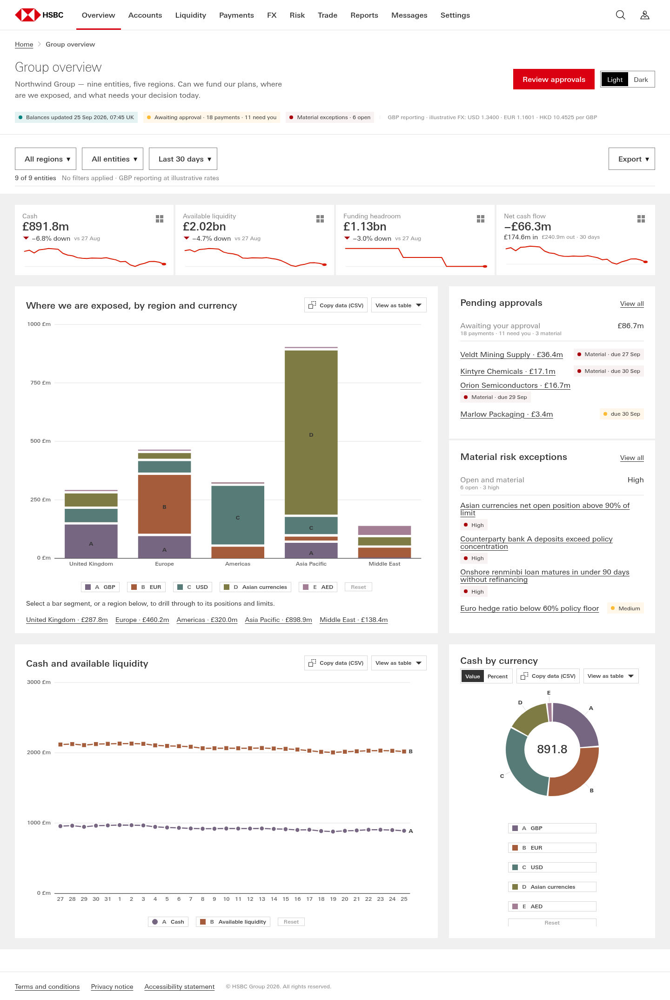
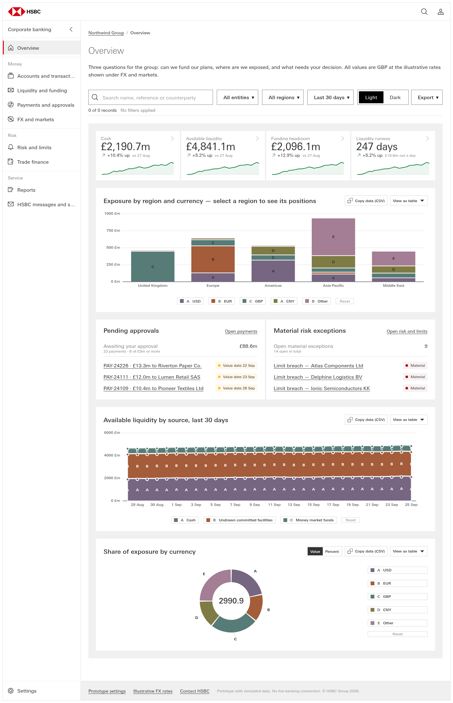
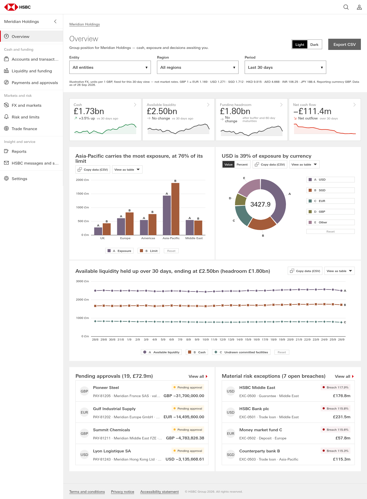
By eye, the same three · 1440 · dark, by each page's own Dark button
On candidate 2's pages the grey section and the chart tiles resolve to the same #1F1F1F, so the tiles lose their edges. The KPI tiles keep a border and survive. v1013-r3 and cand-r3 stepped around this: each set its own ground to the page colour, #1A1A1A, so their tiles still show, if only faintly.
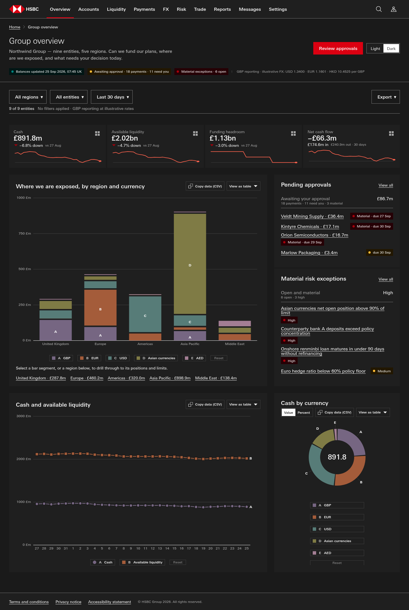
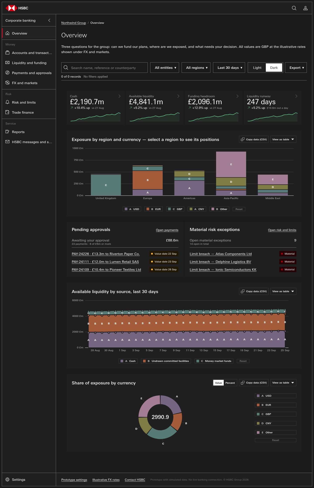
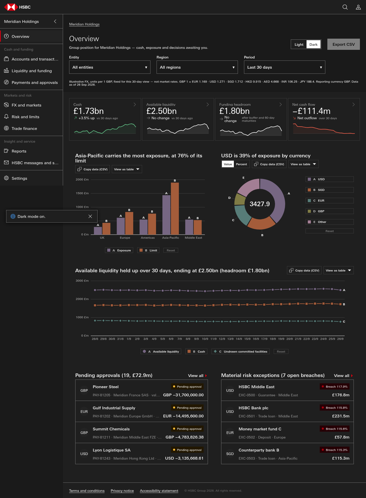
By eye, the other two candidate 2 runs · 1440
cand2-r1 is one long column of full-width chart tiles. Its donut sits small in a wide tile with the legend at the far right, which is the hug-or-fill question W4a put to you, and its risk list prints "raised NaN Sep". cand2-r2 is a tidy two-by-two chart wall. Its stacked area still carries a letter and a marker on every point, "Middle East and Africa" and "1500 £m" are cut at the right-hand edge, and one KPI reads "−2781.4% down".
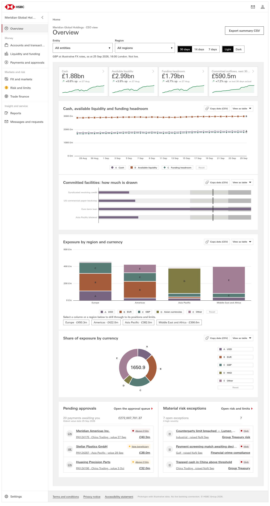
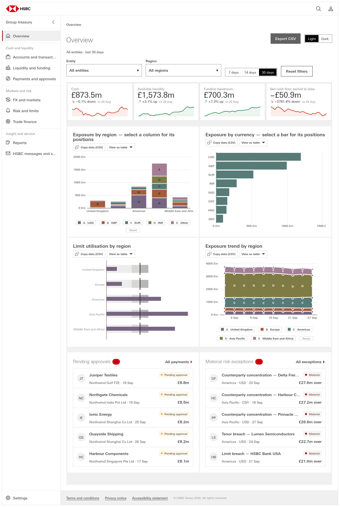
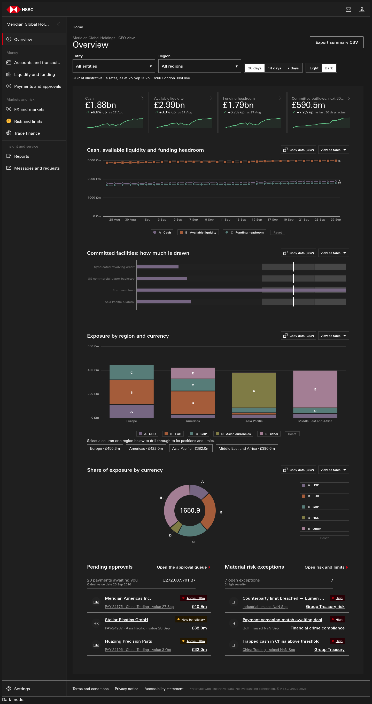
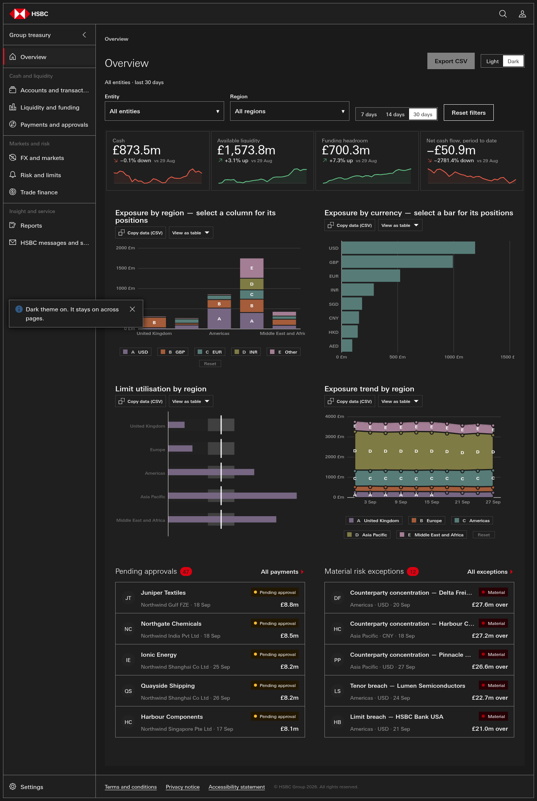
The scorecard · ink per view, lower is better
Ink is the W4b harness's comparable number: affected tiles (or, for size, kinds) summed over five classes, divided by the views measured. Every run is measured on its ten views at 1440. All nine runs pass the floor, which is each rubric part at 2 or more.
| Run | Old engine, as shipped (W4b) | W4a engine (W4a) | Candidate 2 engine and canon | Without KPI crop and grid false positive | Dead | Cut | Collisions | Size | Markers |
|---|---|---|---|---|---|---|---|---|---|
| v1013-r1 | 7.3 | 6.2 | 6.2 | 5.8 | 15 | 0 | 14 | 28 | 5 |
| v1013-r2 | 3.9 | 3.7 | 3.7 | 3.7 | 4 | 0 | 0 | 27 | 6 |
| v1013-r3 | 7.4 | 6.4 | 6.4 | 6.4 | 21 | 0 | 9 | 29 | 5 |
| v1.0.13 mean | 6.20 | 5.43 | 5.43 | 5.30 | 1.33 | 0.00 | 0.77 | 2.80 | 0.53 |
| cand-r1 | 8.0 | 5.8 | 5.8 | 4.8 | 11 | 9 | 1 | 31 | 6 |
| cand-r2 | 5.2 | 4.0 | 4.0 | 3.4 | 7 | 3 | 4 | 22 | 4 |
| cand-r3 | 7.9 | 7.1 | 7.1 | 4.6 | 7 | 24 | 10 | 26 | 4 |
| candidate 1 mean | 7.03 | 5.63 | 5.63 | 4.27 | 0.83 | 1.20 | 0.50 | 2.63 | 0.47 |
| cand2-r1 | — | — | 4.7 | 3.7 | 8 | 5 | 7 | 23 | 4 |
| cand2-r2 | — | — | 4.4 | 3.6 | 5 | 3 | 5 | 31 | 0 |
| cand2-r3 | — | — | 6.2 | 3.9 | 10 | 23 | 0 | 25 | 4 |
| candidate 2 mean | — | — | 5.10 | 3.73 | 0.77 | 1.03 | 0.40 | 2.63 | 0.27 |
The third column is the like-for-like one for what a page renders with. All nine runs are drawn by the same engine, canon and type bytes: the candidate 2 pack's, which match repo HEAD 3100da99.
No comparison is like for like on how the pages were built. The candidate 2 agents built with the new engine and canon in front of them. They could see a ring hug its frame and a y-axis fit its labels, and they had the candidate 2 skill. The earlier six were built on v1.0.13 or candidate 1 and are only re-drawn here. So the gap between the third column and candidate 2 is authoring, meaning skill, agent and run-to-run chance, with three runs a side.
The first column, the W4b baseline, is not like for like at all. Old engine, old canon. The second, W4a, is like for like on the engine but used HEAD 86249459's canon, which is before waves three and four. It reads identically to the third.
| Run | Question | Evidence | Answer |
|---|---|---|---|
| cand2-r1 | Does the overview answer the three CEO questions as three visible groups (resilience · exposure · decisions)? | Overview · Cash, available liquidity and funding headroom · Committed facilities: how much is drawn · Exposure by region and currency · Share of exposure by currency · Pending approvals · Material risk exceptions | Dave: ______ |
| cand2-r1 | Is any ring chart (donut or pie) sitting in a tile wider than half the wall? | Overview donut, tile 90% of the content width; Payments and approvals pie, tile 90% of the content width; HSBC messages and service requests pie, tile 90% of the content width | Dave: ______ |
| cand2-r2 | Does the overview answer the three CEO questions as three visible groups (resilience · exposure · decisions)? | Overview · Exposure by region — select a column for its positions · Exposure by currency — select a bar for its positions · Limit utilisation by region · Exposure trend by region · Pending approvals · Material risk exceptions | Dave: ______ |
| cand2-r2 | Is any ring chart (donut or pie) sitting in a tile wider than half the wall? | Accounts and transactions pie, tile 95% of the content width; Liquidity and funding donut, tile 95% of the content width; Payments and approvals donut, tile 95% of the content width; Reports pie, tile 95% of the content width | Dave: ______ |
| cand2-r3 | Does the overview answer the three CEO questions as three visible groups (resilience · exposure · decisions)? | Overview · Asia-Pacific carries the most exposure, at 76% of its limit · USD is 39% of exposure by currency · Available liquidity held up over 30 days, ending at £2.50bn (headroom · Pending approvals (19, £72.9m) · Material risk exceptions (7 open breaches) | Dave: ______ |
| cand2-r3 | Is any ring chart (donut or pie) sitting in a tile wider than half the wall? | Overview donut, tile 48% of the content width; Liquidity and funding donut, tile 48% of the content width; Payments and approvals pie, tile 48% of the content width; Trade finance donut, tile 48% of the content width; HSBC messages and service requests pie, tile 48% of the content width | Dave: ______ |
Defects the candidate 2 runs reported, verified here
Measured with each page's own Dark button: the ground is rgb(31,31,31) and so are the tiles, on all three runs. The cause is in the token block. [data-theme="dark"] sets --surface-subtle and --surface-raised both to #1F1F1F (canon.css:845–846, generated from the tokens). The rails file claims its dark equivalents were "derived, not chosen", and its resolved map gives dark grey = dark white for every theme. Common is missing from that map entirely.
Fix: you choose what the dark ground is. Either it takes the page colour #1A1A1A under #1F1F1F tiles, which is what v1013-r3 and cand-r3 did by hand, or tiles carry an edge in dark. Then the token or the rails change to match.
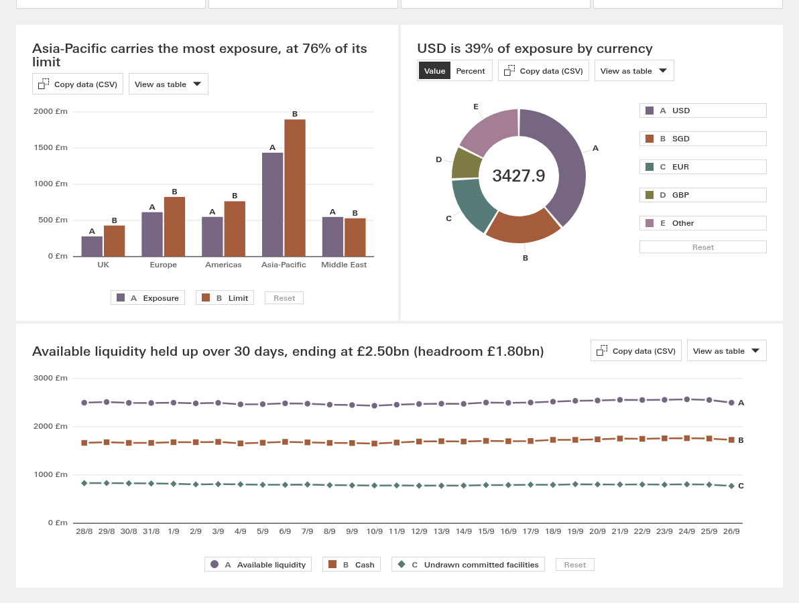
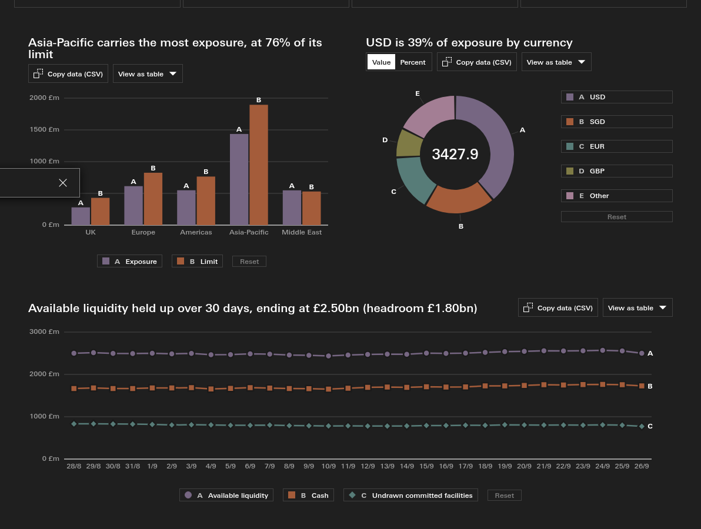
The rule is :where(.cn-app-shell-side-nav) .sh{…height:640px} at canon.css:5678; doormat (4697) and multi-column (5148) carry the same. cand2-r1 and cand2-r2 ship in a 640px box, with the empty band below it at 1440 × 900. cand2-r3 avoided the frame by not using .sh, so its nav pane stops at about 730px.
Fix: a full-viewport form of the shell, and the skill's never-resize wording to point at it.
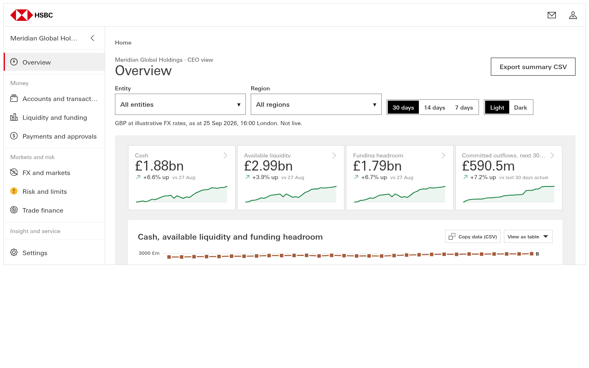
_validate_receipt.py inline_scripts() skips AUTO-BEHAVIOUR spans but not APOLLO-DEMO spans. The fence regex exists at line 199 but is not used there. So Data-grid.reference.html#script resolves to two scripts: the real 23,876 B one and the 1,447 B state-switcher inside the APOLLO-DEMO fence (lines 1140–1166), which the skill forbids copying. Reproduced: FAIL:BEHAVIOUR-NOT-LOADED on the grid pages of all three runs, including r1, which carries the real script byte for byte.
Fix: mask APOLLO-DEMO spans in inline_scripts(). This is one of the two pre-cut fixes.
The mint's behaviour_address() resolves the chart snippets' AUTO-BEHAVIOUR marker to dv-behaviour.js, while every chart meta says dv-render.js. Reproduced as FAIL:BEHAVIOUR-ADDRESS-DISAGREES on every chart region of cand2-r3. cand2-r2 hid it by re-minting with its own script. It is present in v1.0.13 too.
text-box-trim shrinks the chart legend buttons: 82, 104 and 146 own-size findings. Confirmed, cause found. Canon generator, no ruling
The shrink does not come from the button's own rule. The per-scope leading-trim rule of the shell (:where(.cn-app-shell-side-nav) :where(button, span, li, …), canon.css:5668) and of the bento template (17643) reaches into the nested chart legend. It trims the two spans inside each button, and the button collapses to 16.7px. Taking the trim off those two spans restores 20px, the reference height (probe_size.py). Every own-size finding on all three runs is a chart part.
Fix: gen_canon_components.py scopes each snippet's CSS under :where(.cn-x) with no lower boundary, so it should stop at a nested cn- scope. This is the size-drift class, 2.6 of candidate 2's 5.1 per view, and it is the same in every group.
:where(.cn-template-dashboard-bento) .spark-inline{height:44px} (17942) outranks :where(.cn-kpi-tile) .spark-inline{height:40px} (13102) on source order. Measured: spark 44 against 40, tile 159.1 against the reference's 155.1.
_validate_screen.py gate_icons() scans the raw HTML, script bodies included. An inlined dv-render.js contains the text "<svg" (the comment at line 245 and the string at 258), and the regex runs on to a later </svg>. It then reads d="M' + p.join(' L') + ' Z…" as an unknown icon path. Reproduced on cand2-r2. cand2-r1 loads the engine by src and passes.
Fix: mask <script> bodies before the icon scan. This is the other pre-cut fix.
The last value tick ("600 £m", "1500 £m") and the last category ("Middle East and Africa") run 5–19px past the end of the chart's .dv-stage (overflow-x:auto). It happens 2–4 times per run in every group (probe_edge.py). W4a fitted the left gutter; the right end is the same class. The geometry gate misses it because G8 counts a scroll box's end edge as reachable.
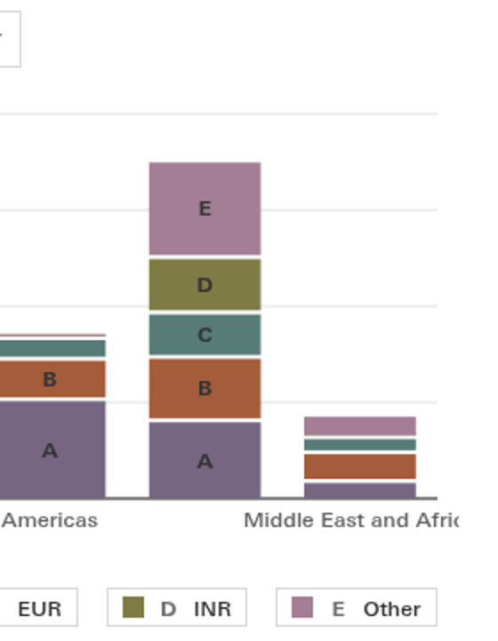
Grid rows scrolled out of the grid's own 378px box are measured as sitting on the pager and the keyboard hint. On screen they are hidden (probe_grid.py, probe/grid-cand2-r1-payments.png). This is nested scroll frames: W4b's repair compares within the outer frame, not the innermost. It accounts for 10 of candidate 2's 12 collision tiles and a few in the earlier groups. The adjusted column removes it.
All 31 of candidate 2's cut tiles are the KPI label crop (s261-D4, held). Every 30-point line carries 30 markers, and cand2-r2's stacked area carries a letter at every point. W4a rendered that option for you.
Run-level slips, not canon: "raised NaN Sep" (r1), "−2781.4% down" (r2), and donut totals with no unit ("3427.9").
Method, in brief
Each candidate 2 run was scored with the W4b harness (score.py all, w4b-2.0) against the candidate 2 zip, sha256 8a75ce32…aff47e3. That covers stage, static, gates, render, drive, views on every view with the theme switched both ways, and ext (geometry at 1440/390 and own-size on the overview). Writes were redirected to notes/_lanes/304/R4s2/runs.
The geometry and own-size gates also ran directly on all ten pages of each run. The six earlier runs were re-staged on the candidate 2 pack's engine, canon and type with W4a's own restage method, and their views re-measured.
The adjusted column removes a view's collisions when every sampled collision names the grid's pager, hint or range. It removes a view's cut ink when every sampled cut is kpi-lbl. It reads from samples, and is declared as such.
Receipts. Harness runs: notes/_lanes/304/R4s2/runs/cold-cand2-r{1,2,3}/ (scorecard, views, ext). Earlier six on candidate 2 canon: runs-c2canon/ (via restage_c2.py, mkruns_c2.py, views_c2.sh). Direct gate runs: gates/. Every number on this page: ink-sets.json. Probes: probe_grid.py, probe_size.py, probe_edge.py (outputs edge-runs*.json). Shots: shots.py → shots/ (shots.json holds the dark colours). Stages are seat-local at $HOME/r4c/stage/cold-cand2-* and $HOME/r4s2/st/c2canon/; the frozen outputs were not modified. Report: notes/_subreports/2026-09-27-304-R4s2-candidate-2-scores.md.